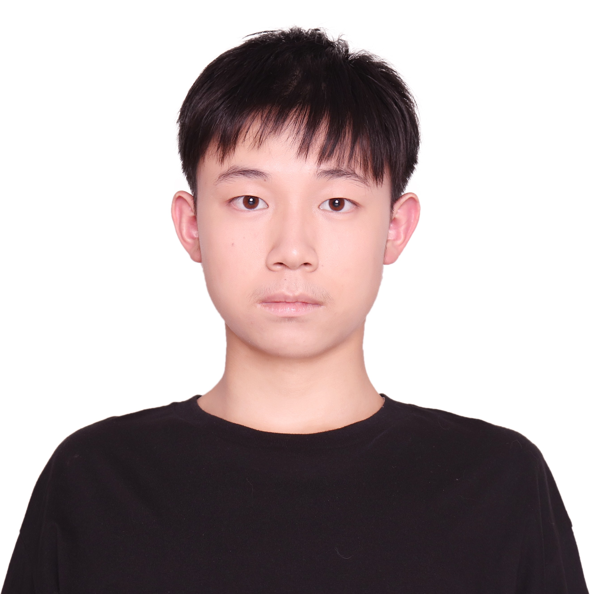

About
I am a Master's student in Computer Science at the University of Virginia, advised by Prof. Yangfeng Ji. I also collaborate with Prof. Tianhao Wang on privacy and agent research. I received dual B.S. degrees in Mathematics and Computer Science from UW–Madison.
My research interests lie in LLM internal mechanisms and interpretability and agent learning, adaptation, and planning. I am applying for CS PhD programs starting Fall 2027.
Publications
Understanding the Hidden State of Language Models from the Perspective of Sentiment Analysis
IEEE ICDM Workshop (ICDMW), 2024
1 paper under review
Research Projects
LLM Abuse in Digital Advertising Marketplaces: Detection and Mitigation
Ongoing, University of Virginia, 2026
Markov Dynamics of Hidden States and LLM Reasoning Accuracy
Master's Thesis (in progress), University of Virginia, 2026
Privacy Attack via Temporal Embedding Inversion
Technical Report, University of Virginia, 2026
Education
M.S. in Computer Science
University of Virginia · GPA: 4.0 · Advisor: Yangfeng Ji
2025 – 2026
B.S. in Mathematics & B.S. in Computer Science
University of Wisconsin–Madison · Dean's List
2021 – 2025
Experience
Research Assistant · University of Virginia
2026 – Present
Research on detecting and mitigating LLM-enabled abuse in digital advertising marketplaces. PI: Tianhao Wang (CS); Co-PIs: Michael Albert (Darden), Jingjing Li (McIntire).
Research Intern · SenticNet (Sentic Team), NTU Singapore
May – Sep 2024
Worked on LLM hidden-state analysis for sentiment understanding under the supervision of Xulang Zhang, Rui Mao, and Erik Cambria.